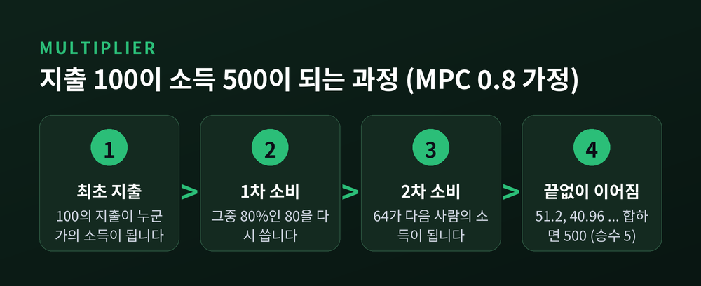
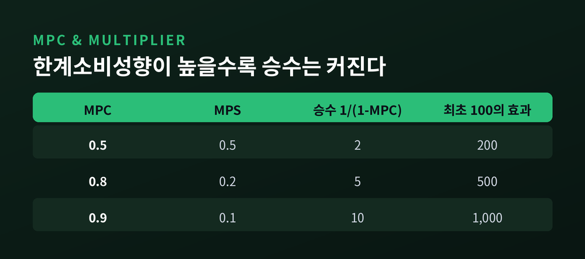
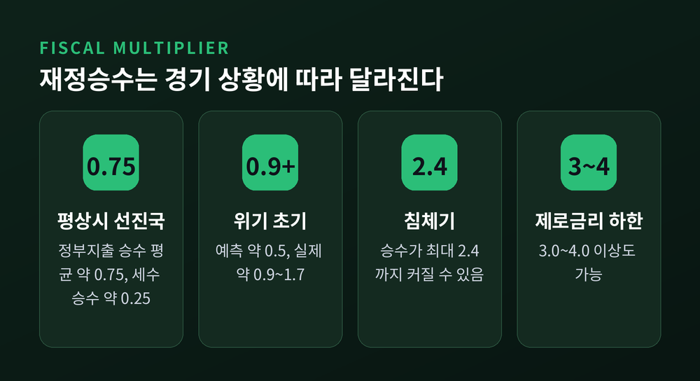
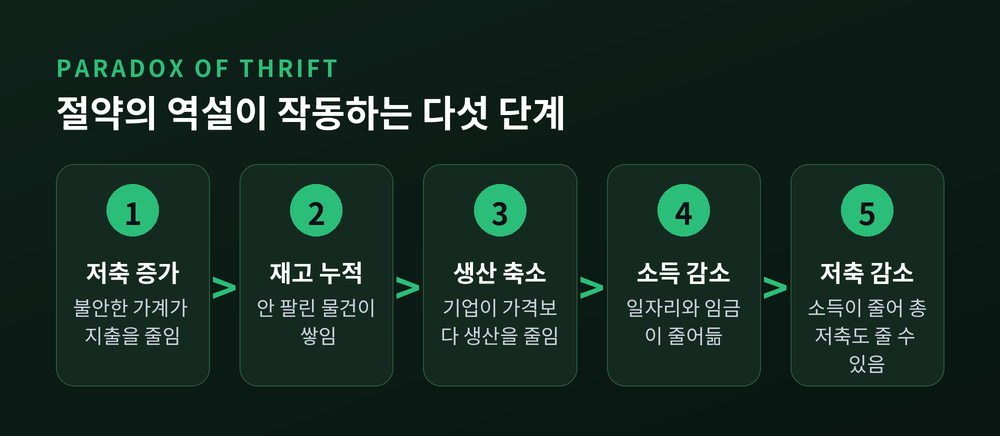
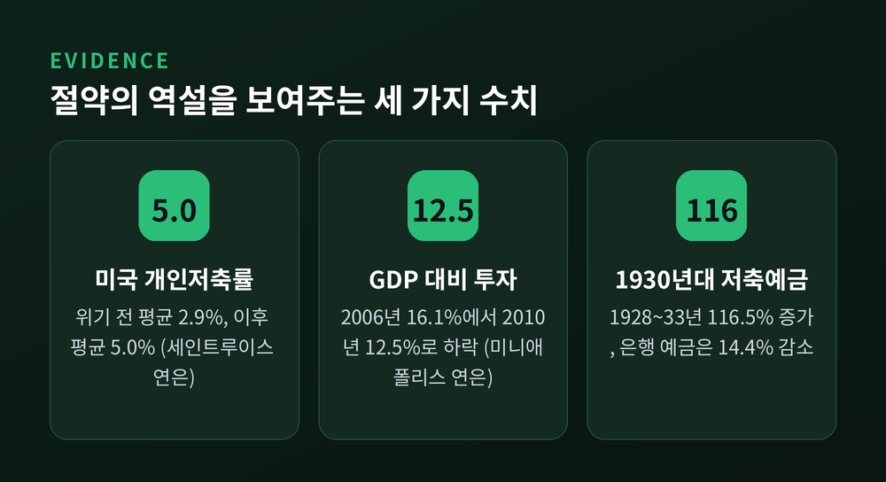
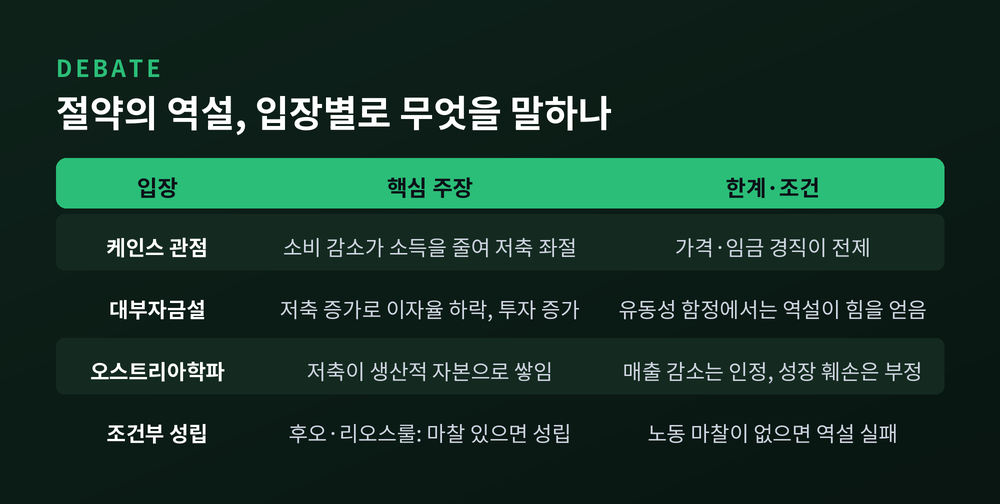

오늘은 케인스 승수효과와 절약의 역설에 대해 이야기해 보려 합니다.
한 사람의 지출은 다른 사람의 소득이 되기 때문에, 지출은 GDP를 원래 금액보다 더 크게 움직입니다. 같은 이유로 모두가 동시에 저축을 늘리면 경기가 식고, 저축 총액마저 줄어들 수 있습니다.
누군가 식당에서 10만 원을 씁니다. 이 돈은 식당 주인의 소득이 됩니다.
주인은 그중 일부를 다시 씁니다. 그 돈은 또 다른 사람의 소득이 됩니다.
이 연쇄가 이어지는 동안 처음 지출은 몇 배의 소득으로 불어납니다. 이것이 승수효과입니다.
불어나는 정도는 한계소비성향(MPC)이 정합니다. 추가로 번 돈 가운데 소비하는 비율을 뜻합니다. 공식은 단순합니다.
"지출 승수 = 1 ÷ (1 - MPC)"
MPC가 0.8이라고 가정해 보겠습니다. 100의 지출은 80, 64, 51.2로 이어지며 소득을 만들고, 끝까지 더하면 500이 됩니다. 승수는 5입니다. MPC가 0.9라면 승수는 10까지 커집니다.

이 아이디어의 뿌리는 1931년 6월입니다. 케임브리지의 리처드 칸이 Economic Journal에 「국내 투자와 실업의 관계」를 발표하며 승수 원리를 내놓았습니다. 칸은 케인스가 『일반이론』을 쓰는 데 가장 가까웠던 협력자였습니다.
케인스는 『일반이론』 10장에서 이를 투자 승수 k로 정리했습니다. 투자가 늘면 소득은 그 k배 늘어나고, 한계소비성향은 1 - 1/k와 같다는 것입니다.
MPC가 높을수록 승수는 가파르게 커집니다.

다만 현실의 승수는 이 표보다 작습니다. 돈이 중간에 새기 때문입니다. 교재들은 세 가지 누수를 꼽습니다. 저축, 세금, 수입입니다. 소득이 저축으로 빠지고, 세금으로 나가고, 해외 상품을 사는 데 쓰이면 국내 연쇄는 거기서 끊깁니다.
또 하나 기억할 점이 있습니다. 승수는 양방향입니다. 지출이 줄면 감소분도 같은 방식으로 증폭됩니다.
정부지출에 적용하면 이를 재정승수라 부릅니다. 국제통화기금(IMF)은 재정승수를 재정적자의 외생적 변화에 대한 산출 변화의 비율로 정의합니다.
IMF 기술노트(2014)에 따르면 선진국의 평상시 정부지출 승수는 평균 약 0.75, 세수 승수는 약 0.25입니다. 케인스의 단순 공식이 주는 5나 10과는 거리가 멉니다. 신흥국과 저소득국은 지출 승수가 0.1~0.3에 그칩니다.
그런데 경기 상황이 바뀌면 값도 달라집니다. 침체기에는 승수가 최대 2.4까지 커질 수 있고, 정책금리가 제로 하한에 묶여 통화정책이 움직이지 못하면 3.0~4.0을 넘기도 합니다.
예전엔 승수를 작게 보았습니다. 지금은 더 크다고 평가합니다. 블랜차드와 리는 2013년 논문에서, 위기 초기에 예측기관들이 승수를 약 0.5로 가정했지만 실제로는 약 0.9~1.7이었다고 분석했습니다. 긴축을 강하게 계획한 나라일수록 성장이 예상보다 낮았다는 것입니다. 다만 이후 연도에는 이 관계가 약해졌습니다.

국가별 차이도 큽니다. 44개국 자료를 분석한 일제츠키, 멘도사, 베그의 연구에서는 선진국이 개도국보다, 고정환율제가 변동환율제보다 승수가 컸습니다. 무역 개방도가 높을수록 작았고, 부채가 많은 나라에서는 음(-)으로 나타났습니다.
지출의 종류에 따라서도 다릅니다. 미 의회예산처(CBO)는 2009년 경기부양법(ARRA)을 평가하며 연방정부의 재화·서비스 구입 승수를 0.5~2.5, 고소득층의 1년짜리 감세를 0.1~0.6, 기업 세제 혜택을 0~0.4로 추정했습니다. 범위가 넓다는 점 자체가 이 분야의 불확실성을 보여줍니다.
이제 반대편을 보겠습니다. 승수가 지출의 증폭기라면, 저축 증가는 감속기가 될 수 있습니다.
불황이 오면 사람들은 불안해서 지출을 줄이고 저축을 늘립니다. 개인에게는 합리적입니다. 그러나 모두가 그렇게 하면 이야기가 달라집니다. 세인트루이스 연방준비은행의 표현으로는, 한 사람의 지출이 다른 사람의 소득이기 때문입니다.
작동 방식은 이렇습니다. 소비가 줄면 기업의 재고가 의도치 않게 쌓입니다. 기업은 가격을 내리기보다 생산을 줄입니다. 일자리와 소득이 줄고, 사람들은 결국 더 적게 저축하게 됩니다. 케인스는 『일반이론』에서 이렇게 적었습니다.
"소비를 줄여 더 저축하려는 모든 시도는 소득에 영향을 미쳐, 그 시도를 스스로 좌절시킨다."

2008년 금융위기 이후 미국이 한 사례입니다. 미니애폴리스 연방준비은행에 따르면 개인저축률은 2006년 3%에서 2010년 5%로 올랐고, 같은 기간 GDP 대비 투자 비율은 16.1%에서 12.5%로 내려갔습니다. 세인트루이스 연은은 위기 이전 평균 2.9%이던 저축률이 이후 평균 5.0%가 되었다고 정리합니다. 산출 방식이 달라 표기는 다르지만 방향은 같습니다.
더 극적인 장면은 1930년대입니다. 모네와 드고르스가 22개국(1930년 세계 GDP의 75%)의 예금 자료를 분석했습니다. 1928년에서 1933년 사이 저축기관 예금은 GDP의 16%에서 24%로 늘었습니다. 은행 예금은 14.4% 줄었는데 저축예금은 116.5% 늘었습니다.
연구진은 이 예비적 저축 증가, 곧 절약의 역설이 1930~1932년 실질 GDP 하락의 약 15%를 설명한다고 추정했습니다. 금본위제를 벗어난 나라들에서는 저축률이 안정되거나 내려갔습니다.

이 이론은 만능이 아닙니다. 짚어야 할 반론이 분명히 있습니다.
신고전파의 대부자금설은 저축이 늘면 이자율이 내려가 투자가 늘고, 소비 감소를 메운다고 봅니다. 오스트리아학파는 저축이 생산적 자본으로 쌓여 성장에 도움이 된다고 주장합니다. 케인스식 논리가 힘을 얻으려면 화폐 보유가 크게 늘거나 가격과 임금이 충분히 경직되어야 한다는 지적도 있습니다.
승수 쪽에도 비판이 있습니다. 리카도 등가는 정부가 빚으로 지출하면 국민이 미래 세금을 예상해 소비를 줄인다고 봅니다. 구축효과는 정부지출이 민간투자를 밀어낼 수 있다고 말합니다. 경제에 유휴 자원이 없다면 승수는 제약됩니다.
절충된 연구도 있습니다. 미니애폴리스 연은의 후오와 리오스룰은 신고전파 모형 안에서도 부문 간 자원 재배치 비용과 노동시장 마찰이 있으면 절약의 역설이 성립한다고 보았습니다. 이 마찰이 없으면 역설은 무너집니다.

한 가지 오해는 피하셔야 합니다. 이 역설이 저축 자체를 나쁘다고 말하지는 않습니다. 장기적으로 저축은 기계와 기술에 대한 투자의 재원이 되어 생산성과 성장에 기여합니다. 문제가 되는 시점은 수요가 부족한 불황기, 그리고 모두가 동시에 움직일 때입니다.
정리하면 이렇습니다.
승수효과와 절약의 역설은 같은 원리의 앞면과 뒷면입니다. 지출은 소득으로 돌아오고, 그 소득이 다시 지출이 되기 때문입니다. 다만 그 크기는 하나의 숫자로 고정되지 않습니다. 평상시 0.75일 수도, 침체기에 2.4를 넘을 수도 있습니다.
"나에게 합리적인 선택이 모두에게 합리적이라는 보장은 없다."
개인의 지갑에서 옳은 판단과 경제 전체에서 옳은 판단이 어긋날 때, 우리는 무엇을 기준으로 삼아야 할까요. 이 질문에 정해진 답은 없지만, 승수라는 숫자 하나가 그 질문을 가장 선명하게 만들어 준다고 생각합니다.
※ 이 글은 경제 개념을 설명하기 위한 것이며, 특정 투자나 정책에 대한 권유가 아닙니다.